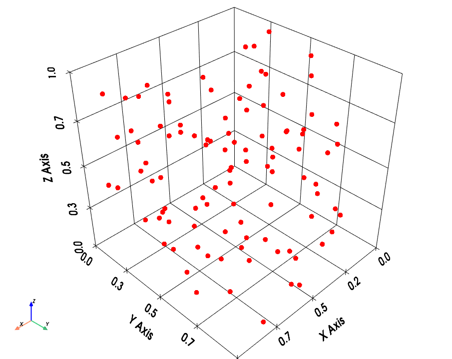

pysdic.geometry.PointCloud3D#
PointCloud3D class#
- class pysdic.geometry.PointCloud3D(points)[source]#
A class representing a 3D point cloud.
This class is designed to handle 3D point clouds, which are collections of points in a three-dimensional space.
 Example of a 3D point cloud visualization using the visualize method.#
- Parameters:
points (numpy.ndarray) – A NumPy array of shape (N, 3) representing the coordinates of the points.
- Raises:
ValueError – If the input array does not have the correct shape (N, 3).
{kind=link}
Instantiate and export PointCloud3D object#
To Instantiate a PointCloud3D object, use one of the following class methods:
|
Create a PointCloud3D object from a NumPy array of shape (N, 3). |
|
Create a PointCloud3D object from another PointCloud3D instance. |
Create an empty PointCloud3D object with no points, i.e., shape (0, 3). |
|
|
Create a PointCloud3D object from a OBJ file. |
|
Create a PointCloud3D object from a PLY file. |
|
Create a PointCloud3D object from a VTK file. |
|
Create a PointCloud3D object from a XYZ file. |
The PointCloud3D can then be exported to different formats using the following methods:
Convert the point cloud to a NumPy array of shape (N, 3). |
|
Convert the point cloud to a NumPy array of shape (N, 3). |
|
|
Save the point cloud to a OBJ file. |
|
Save the point cloud to a PLY file. |
|
Save the point cloud to a VTK file. |
|
Save the point cloud to a XYZ file. |
Accessing PointCloud3D attributes#
The public attributes of a PointCloud3D object can be accessed using the following properties:
Alias for |
|
An numpy array of shape (N, 3) representing the coordinates of the points in the cloud. |
|
The number of points N in the point cloud. |
|
The shape of the points array (N, 3), where N is the number of points. |
Add, remove or modify points in PointCloud3D objects#
The points of a PointCloud3D object can be manipulated using the following methods:
|
Check if all points in the current point cloud are approximately equal to the points in another PointCloud3D instance within a tolerance. |
|
Concatenate the current point cloud with another PointCloud3D instance. |
Create a copy of the current PointCloud3D instance. |
|
|
Transform the point cloud from an input frame of reference to an output frame of reference. |
|
Keep only the points in the current point cloud that are present in another PointCloud3D instance. |
|
Keep only the points at the specified indices in the point cloud. |
|
Merge points from another PointCloud3D instance with the current point cloud, avoiding duplicates. |
|
Remove points from the current point cloud that are present in another PointCloud3D instance. |
|
Remove points from the point cloud based on their indices. |
|
Remove duplicate points from the point cloud. |
Operations on PointCloud3D objects#
The following methods can be used to operate on PointCloud3D objects:
+operator: Concatenate two PointCloud3D objects.+=operator: In-place concatenation of two PointCloud3D objects.len()function: Get the number of points in a PointCloud3D object.
|
|
|
|
PointCloud3D object geometric computations#
The following methods can be used to perform geometric computations on PointCloud3D objects:
Compute the axis-aligned bounding box of the point cloud. |
|
Compute the bounding sphere of the point cloud. |
Visualize PointCloud3D objects#
Visualizing a PointCloud3D object can be done using the following method:
|
Visualize the point cloud using PyVista. |
Examples of a simple PointCloud3D workflow#
Here is an example of a simple workflow using the PointCloud3D class:
First create a PointCloud3D object from a NumPy array:
import numpy
from pysdic.geometry import PointCloud3D
# Create a random NumPy array of shape (100, 3)
points_array = numpy.random.rand(100, 3)
# Instantiate a PointCloud3D object from the NumPy array
point_cloud = PointCloud3D.from_array(points_array)
Now lets change the frame of reference of the point cloud by applying a translation:
from py3dframe import Frame
# Define the actual frame of reference of the point cloud
actual_frame = Frame.canonical()
# Define a new frame of reference by translating the actual frame
new_frame = Frame.from_axes(origin=[1, 2, 3], x_axis=[1, 0, 0], y_axis=[0, 1, 0], z_axis=[0, 0, 1]) # Translation by (1, 2, 3)
# Transform the point cloud to the new frame of reference
point_cloud = point_cloud.frame_transform(actual_frame, new_frame)
Now visualize the point cloud:
point_cloud.visualize()